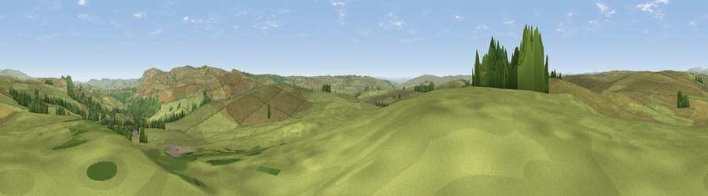

Viewpoint near Elsdon
#18593 in England · top 50% of its area beats it · near ElsdonWhere it is
The exact computed spot (NY 92925 96625). Click the marker for map links.
The view, rendered

A 360° render of this exact spot computed from the terrain model, tree cover and land cover — summer colours, afternoon light, calibrated against photographs of famous viewpoints. Real trees, hedges and buildings will differ in detail.
The panorama
Grey silhouette: terrain skyline in each direction (720 bearings, Earth curvature and refraction included). Dashed green: skyline with trees (+15 m) and buildings (+8 m) as obstacles. Blue strip: how far the ground is visible on each bearing.
Where the view opens
Wedge length = distance to the farthest visible ground on that bearing (vegetation-aware). Rings at 10, 25 and 50 km.
What fills the view
94% grassland · 6% woodland
Angular shares of the visible panorama (visual magnitude), not map area. Landscape diversity 0.11 (0–1 Shannon).
Key numbers
More beautiful places nearby
The staircase of upgrades: each row has a higher view potential than everything closer. Driving times are estimates from straight-line distance, calibrated against real road routing — check an actual route before setting out.
| Place | Direction | Drive | Score |
|---|---|---|---|
| Viewpoint near Elsdon | SE · 2 km | ~5 min | 54.4 |
| Viewpoint near Otterburn | SW · 2 km | ~6 min | 55.1 |
| Viewpoint near Elsdon | SE · 4 km | ~9 min | 55.4 |
| Viewpoint near Elsdon | ESE · 4 km | ~9 min | 71.9 |
| Darden Rigg | E · 6 km | ~13 min | 77.0 |
| Viewpoint near Hepple | ENE · 9 km | ~17 min | 82.4 |
| Viewpoint c12273_7856 | N · 17 km | ~30 min | 83.7 |
| Viewpoint c12396_7887 | N · 23 km | ~38 min | 85.7 |
55.26373, -2.11287 · source: screening · position refined by local search. Computed location — check access rights before visiting.